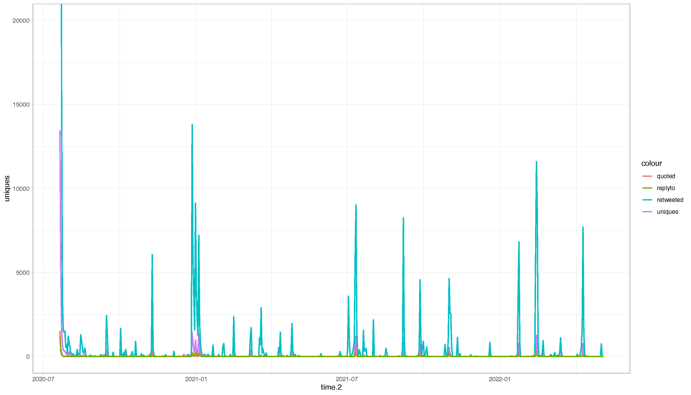
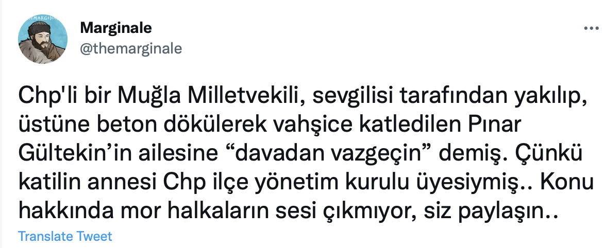
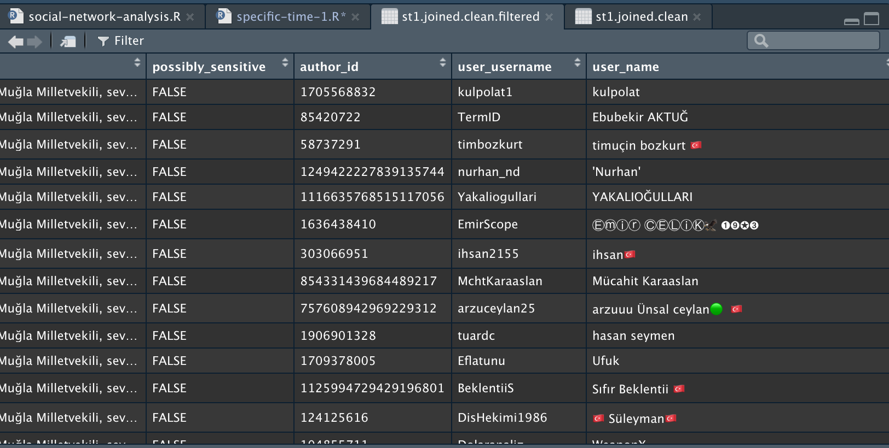
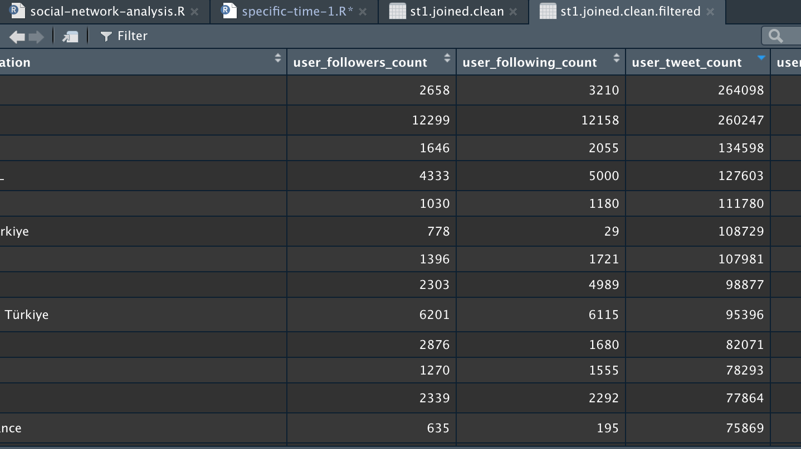
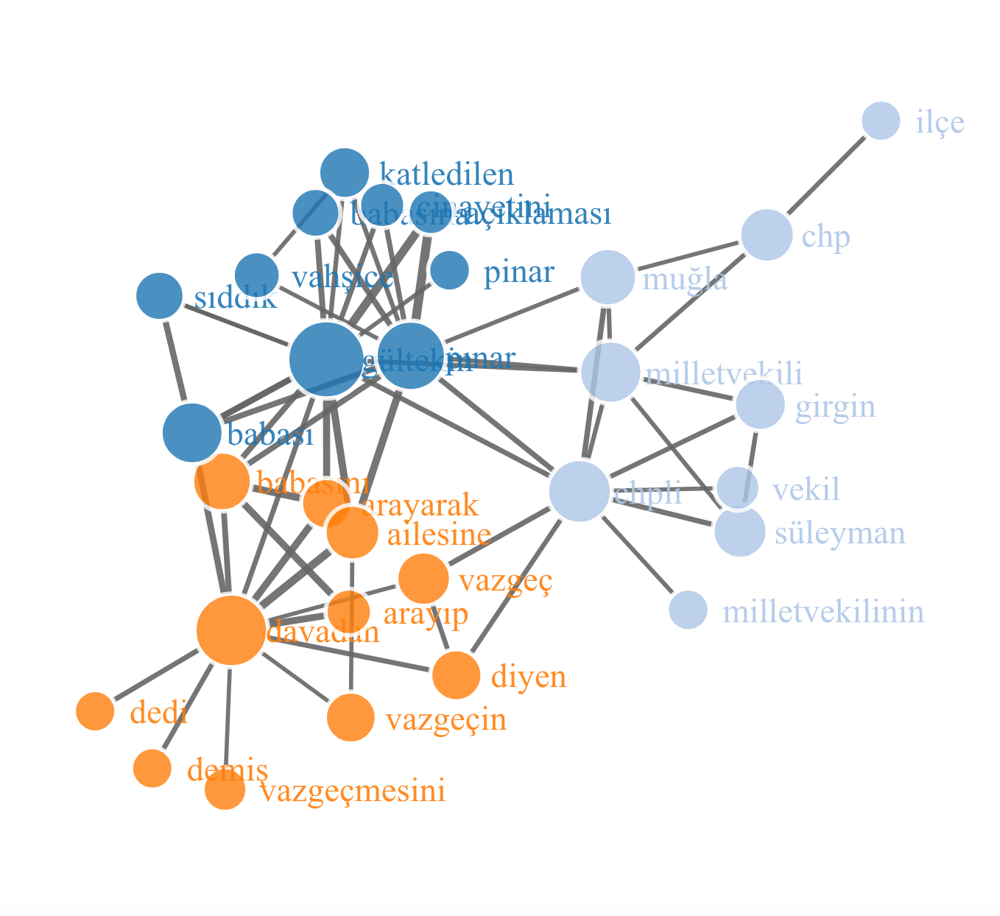
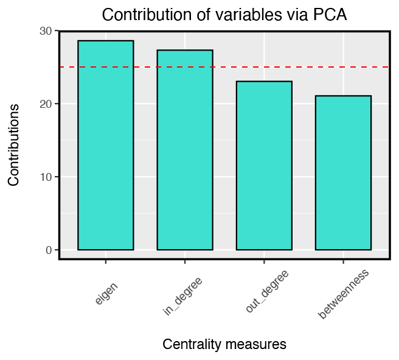

$title
[1] "Saatte atılan tweet sayısı"
attr(,"class")
[1] "labels"2022 CIDA - Presentation
Exploring Political Polarization in Femicide Discourse through Social Network Analysis: Relationships in Polarizations in the Pınar Gültekin Case
Web page where you can follow the presentation content:
1 Introduction
After Pınar Gültekin went missing on July 16, 2020, her family, friends, and women’s movement organizations began efforts to find her, especially by using social media platforms. During this period, Twitter was used very actively.
Key dates in the process:
On July 21, 2020, it was revealed that she had been killed by a man named Cemal Metin Avcı.
In July 2020, debates around the Istanbul Convention intensified (there was a strong reaction on social media to Abdurrahman Dilipak’s July 27 column titled “AKP’nin papatyaları”).
The first hearing took place on November 9, 2020.
On March 20, 2021, Türkiye withdrew from the Istanbul Convention as a result of the opposing campaigns.
At the 13th hearing on June 20, 2022, a sentence of aggravated life imprisonment was first issued, then reduced to 23 years with “unjust provocation” mitigation.
1.1 Research Questions
- Between December 27, 2020 and January 3, 2021, what kind of network do users who tweet about the Pınar Gültekin murder form?
Who are the main actors in the network?
Who dominates the network? Which actors form clusters?
Who are the actors around the main actors?
Which political pole do actors belong to?
- Between December 27, 2020 and January 3, 2021, what is most frequently discussed in tweets about the Pınar Gültekin murder?
1.2 Data Collection
Using Twitter API v2 Academic Research access level, the data was collected in R (via the academictwitteR package).
Academic research level: monthly upper limit of 10 million requests (Full archive search, Full archive tweet count). In other levels (Essential, Elevated) only the last week of data can be accessed.
1.2.1 Distribution of tweet counts (time series plot)
Distribution by tweet type:

1.2.2 Accessing all tweets
Code
get_all_tweets(
query = c("Pınar Gültekin", "#PınarGültekin", "#PınarGültekinİçinAdalet"),
start_tweets = "2020-07-21T10:00:00Z",
end_tweets = "2022-05-05T10:00:00Z",
lang = "tr",
file = "pinargultekin",
data_path = "pg-tweet-data",
n = 632200,
)Total number of tweets in the dataset:
Code
nrow(joined)[1] 478278Dataset columns:
Code
colnames(joined.clean) [1] "id" "created_at" "retweet_count"
[4] "like_count" "quote_count" "url"
[7] "hashtag" "mention_username" "mention_id"
[10] "sourcetweet_type" "sourcetweet_id" "sourcetweet_text"
[13] "sourcetweet_author_id" "text" "possibly_sensitive"
[16] "author_id" "user_username" "user_name"
[19] "user_description" "user_profile_image_url" "user_url"
[22] "user_verified" "user_location" "user_followers_count"
[25] "user_following_count" "user_tweet_count" "user_list_count"
[28] "source" "in_reply_to_user_id" Quoted, Retweet, Unique (including reply-to) tweet counts:
Code
joined %>%
count(sourcetweet_type, name = "frequency") sourcetweet_type frequency
1 quoted 7620
2 retweeted 412642
3 <NA> 58016Interactive data table created for the large dataset:
1.4 Social network visualizations
1.4.1 Interpreting “unnatural-looking” relationships
Difference between troll and bot accounts:
Bot: automated social media accounts programmed to imitate human behavior.
- Botometer, developed at Indiana University by a team including Onur Varol (Sabancı University).
Troll: these accounts are controlled by humans (they can act individually or as coordinated groups).
Time-based correlation (retweets happening at similar times right after the original tweet)
Account activity (e.g.,
user_tweet_count)Content similarity (e.g., accounts that continuously retweet)
Similarly, a recent Harvard University study on identifying troll accounts (Detecting Troll, Saving Democracy) uses:
Content (detecting frequently repeated word groups using techniques similar to our word analysis)
Followers
Following
Retweet count
1.4.2 Example: identifying suspicious interactions
Information on which devices tweets were sent from (device type as an edge attribute):

Accounts that retweeted TheMarginale’s tweet (device type not Android, iPhone, or iPad):

Filtered data:
Code
st1.joined.clean <- subset(joined.clean, created_at> "2020-12-27T00:00:18" & created_at < "2021-01-02T00:23:18")
st1.joined.clean.filtered <- st1.joined.clean%>%
filter(st1.joined.clean$source == "Twitter Web App")
st1.joined.clean.filtered <- st1.joined.clean.filtered%>%
filter(st1.joined.clean.filtered$sourcetweet_id == "1343167361466191874")Time series analysis for the filtered data:
Screenshots of accounts that retweeted the relevant tweet:


1.5 Automated text analysis
1.5.1 Text cleaning steps
In order: | ========================================================================================================================================+ 1. Converting some special characters and Turkish uppercase letters to Latin letters (e.g., ‘α’ = ‘a’, ‘á’ = ‘a’, ‘é’ = ‘e’, ‘Ü’ = ‘u’) | 2. Converting uppercase to lowercase | | 3. Removing Turkish stopwords (e.g., “ve”, “şuna”, “tamam”, “yine”… 473 words) | | 4. Removing some special characters (e.g., removepunctuation, removenumbers, removehashtags, removeurl…) | | 5. Converting Turkish characters to Latin equivalents | |
1.5.2 Most frequent words
word n
1 pınar 4760
2 gültekinin 2827
3 gültekin 2514
4 davadan 2247
5 chp 2128
6 chpli 1896
7 muğla 1457
8 babası 1121
9 milletvekili 1097
10 süleyman 938
11 vazgeç 870
12 babasını 756
13 girgin 722
14 vazgeçin 611
15 ailesine 562
16 vekil 518
17 diyen 495
18 milletvekilinin 489
19 arayarak 487
20 katledilen 4461.5.3 Word cloud
1.5.4 Most frequent emojis
# A tibble: 10 × 2
emoji n
<chr> <int>
1 😡 44
2 🔴 34
3 ❗ 29
4 🔹 25
5 🔥 23
6 👇 22
7 ▪️ 18
8 📌 17
9 💣 16
10 🤬 161.6 Skip-gram model
Splitting text into smaller parts with n-grams and skip-grams enables examining correlations and the context around words.
An n-gram is a sequence of n adjacent items (here, items are words) in an example text.
The value n indicates how many items we split the text into. If n = 1 it is a “unigram”; if n = 2, a “bigram” (two consecutive words); if n = 3, a “trigram”.
n-gram models are frequently used in natural language processing (NLP) to predict the next word/text.
For k-skip-n-grams, n indicates the number of items (words) and k indicates how many skips are allowed.
Therefore, an n-gram (with no skips) is the same as a 0-skip-n-gram.
The skip-gram model is an unsupervised learning technique used to identify contextually related surrounding words for a given word in a text.
1.6.1 Network visualization

1.6.2 Clusters from the “all-time” text analysis
[1] "gültekin, pınar, katledilen, öğrencisi, yeni, cinayetinde, vahşice, üniversite, öldürülen, gültekini, cinayeti, davasında, son, katleden, flaş"
[2] "cemal, metin, katil, mertcan, zanlısı, kardeşi, avcı, tahliye, avcının, sanık, cma, cüce, muğladaki, isimli, mekanın"
[3] "kadınların, pınargültekin, önceki, kişiyi, etiketler, sesiyim, yazıp, etiketleyebildiğiniz, çiçek, yeter, istanbulsözleşmesiyaşatır, çek, üzerinden, kadınasiddetedurde, misiniz"
[4] "gültekinin, davadan, katili, babasını, arayarak, vazgeç, sıddık, babası, ailesinin, ailesine, arayıp, rezan, cansız, diyen, avukatı"
[5] "emine, ozgecan, sule, münevver, aleyna, ceren, helin, cet, güleda, bulut, aslan, cakır, karabulut, ozdemir, oldürüldü"
[6] "süleyman, chp, muğla, chpli, milletvekili, ağır, suç, yönetim, katilin, ilçe, iddianame, hakkında, ceza, gündür, ailesi"
[7] "ortaya, ifadesi, görüntüleri, çıktı"
[8] "pinargultekin, adalet, pınargültekiniçinadalet, gerçek, erkek, istiyoruz, eski, tweet, imza, kampanyaya, arkadaşı, pınargueltekinicinadalet, yerini, sevgilisi, atın"
[9] "kadın, reddi, hakim, öldü, ülkede, cinayetleri, kız, yakılarak, talebi, insanlık, koklamaya, diyor, cesedi, külünü, öpüp"
[10] "adli, otopsi, tıp, raporu"
[11] "diri, yakılmış, yakıldığı"
[12] "üzerine, üstüne, beton, dökülen, varile, koyup, döken, dökülmüş, konup, dökülerek"
[13] "kan, donduran"
[14] "allahtan, allah, rahmet, belanızı, versin, eylesin"
[15] "bağ, keşif, evinde, yapılacak, evine"
[16] "cinayete, kurban, giden"
[17] "ört, bas, etmeye, etmek, isteyen, pis, çalıştı, ellerini"
[18] ""
[19] "" 1.6.3 Text analysis – network visualization
667,875 bigram pairs (created via skip-gram analysis)
Code
nrow(skip.gram.count)[1] 667875
1.3 Social Network Analysis
1.3.1 Definition
An approach based on examining interactions among social actors.
It is grounded in graph theory, a branch of mathematics.
Graph theory examines graphs, a mathematical representation of objects and the relationships among them. Graphs consist of nodes (node, unit, vertex) and edges (edge, line, tie, link).
In its simplest form, a graph is an edge list where nodes appear in two columns.
1.3.2 Centrality measures
Actors (nodes) in a social network can take different structural positions and can affect the flow of information in different ways and at different levels.
Centrality measures make these positions visible.
Degree centrality (degree, in-degree, out-degree) depends on whether the network is directed or undirected. Twitter can be analyzed as both directed and undirected; Facebook is typically undirected.
Degree centrality counts all neighbors equally; what matters is the number of neighbors.
In eigenvector centrality, a node becomes more important if it is connected to important (highly connected) nodes.
Betweenness centrality identifies which nodes are important in the flow of the network using shortest paths; it counts how many shortest paths pass through each node.
Closeness centrality also uses shortest paths and computes a node’s average distance to all other nodes; the smaller the distance, the more central the node.
1.3.3 Preparing the data for analysis
After a cleaning step, the total number of tweets in our dataset is: 443811
Graphs, respectively: retweet, quoted, replyto, mentions, whole
1.3.4 Number of nodes and edges in the network created for the selected time window
Retweet graph:
Quoted graph:
Reply-to graph:
Mentions graph:
Whole graph:
1.3.5 Centrality measures for the whole network (
whole_graph)Out-degree (whole):
In-degree (whole):
Eigenvector centrality (whole):
Closeness (whole):
Betweenness (whole):
1.3.5.1 Most informative centrality measure
To determine which centrality measure is the most informative about the network, we use Principal Component Analysis (PCA).
PCA is a dimensionality reduction technique used in linear analysis.
The analysis was conducted using the
CINNApackage in R.
1.3.6 Centrality measures in the retweet network
Out-degree (retweet):
In-degree (retweet):
Closeness (retweet):
Betweenness (retweet):
1.3.7 Centrality measures in the quoted network
Out-degree (quoted):
In-degree (quoted):
Closeness (quoted):
Betweenness (quoted):
1.3.8 Centrality measures in the reply-to network
Out-degree (reply-to):
In-degree (reply-to):
Closeness (reply-to):
Betweenness (reply-to):
1.3.9 Centrality measures in the mentions network
Out-degree (mentions):
In-degree (mentions):
Closeness (mentions):
Betweenness (mentions):